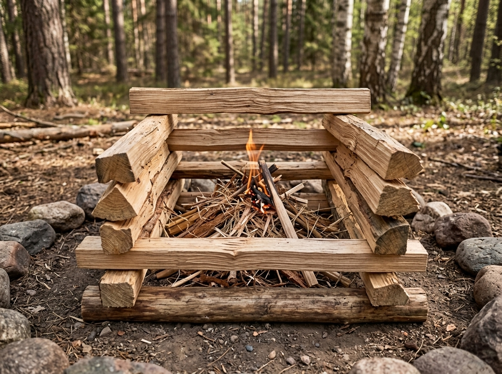

Log Cabin Fire

A log cabin fire uses pieces of wood stacked in alternating layers.
What It Is
The wood is arranged in a square shape. Each layer is placed across the layer below it, similar to the walls of a small log cabin.
When to Use It
This structure can be used for a campfire when a stable arrangement of firewood is wanted.
How It Works
Two pieces of wood are placed parallel to each other. Another two pieces are placed across them. More layers can then be added while leaving space for air.
Materials Needed
- Tinder
- Kindling
- Several pieces of firewood
- Safe ignition source
Source
Fire safety information: National Park Service - Campfires